Korean Food Recipes
TTEOKBOKKI

Ingredients !

1. Add the water, dried anchovies, and dried kelp to a shallow pot or pan.
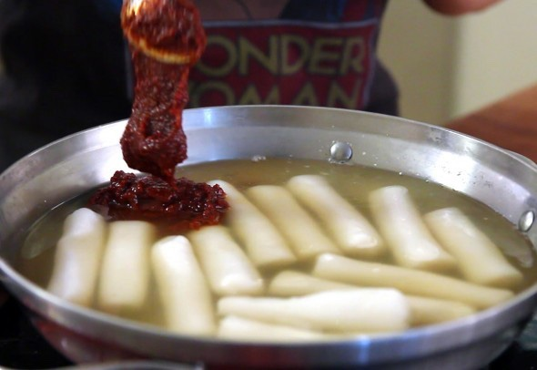2. Boil for 15 minutes over medium high heat without the lid.

3. Combine hot pepper paste, hot pepper flakes, and sugar in a small bowl. Remove the anchovies and kelp from the pot and add the rice cake, the mixture in the bowl, the green onion, and the optional fish cakes and hard boiled eggs. The stock will be about 2 ½ cups.
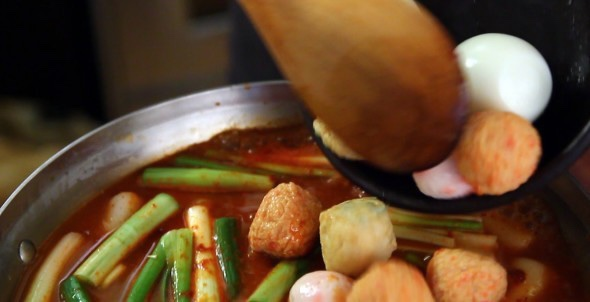4. Stir gently with a wooden spoon when it starts to boil. Keep stirring until the rice cake turns soft and the sauce thickens and looks shiny, which should take about 10 -15 minutes. If the rice cake is not soft enough, add more water and continue stirring until soften. When you use freshly made rice cake, it takes shorter time. If you use frozen rice cake, thaw it out and soak in cold water to soften it before cooking
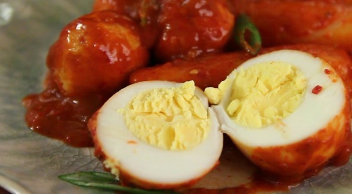remove from the heat and serve hot
KOREAN CHICKEN

Ingredients !
KOREAN FRIED CHICKEN SAUCE
OPTIONAL – TO GARNISH

1. In a bowl, place the chicken, rice wine, ginger, salt and black pepper. Combine them well. Then evenly coat the chicken with the starch and set side. (To get the effect like the below picture, dip the individual chicken pieces into the bowl of starch, roll the chicken around a bit then take them out and set aside.)

2. In a deep saucepan (or frier) add a generous amount of oil and heat it until the oil temperature reaches 175 C / 347 F (or boiling). Start adding the battered chicken carefully and fry them until they cook (between 3 to 5 mins, depending on the size of chicken). Do not overcrowd the pan. (It might be useful to use a grease splatter screen if you have one. It’s super handy! It minimises oil splatter.)
Take out the done chicken and place them onto some kitchen paper while frying the remaining chicken pieces. Once the first set of deep frying is completed, quickly scoop out any floating debris from the oil using a skimmer. Then deep fry the chicken again when the oil temperature reaches 175 C / 347 F (or boiling). Fry them until the batter is golden and crisp. (The second time frying is shorter than the first time, 2 to 3 mins) Set aside.
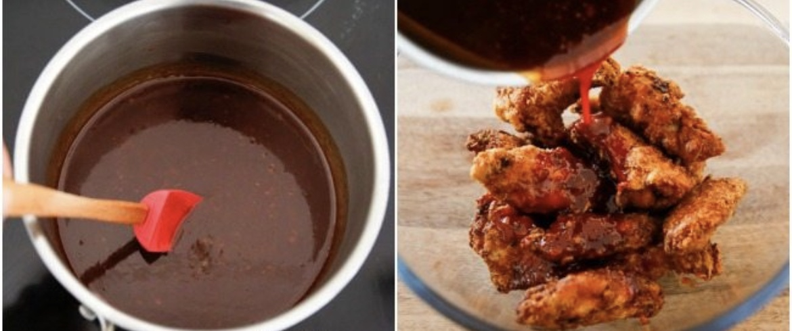3. In a separate saucepan, add in the Korean fried chicken sauce ingredients (listed above). Heat the sauce over low to medium heat and stir well. Once it starts bubbling, remove the pan from the heat.
Place the double fried chicken into a large mixing bowl then pour the fried chicken sauce over the chicken to coat. Mix them lightly and thoroughly. Alternatively, serve the fried chicken and the sauce separately and use the sauce as a dipping sauce. Once all the chicken is coated with the sauce, serve it hot immediately. Leftover chicken can be refrigerated for a day or two and eaten cold. But it won’t be as crunchy.
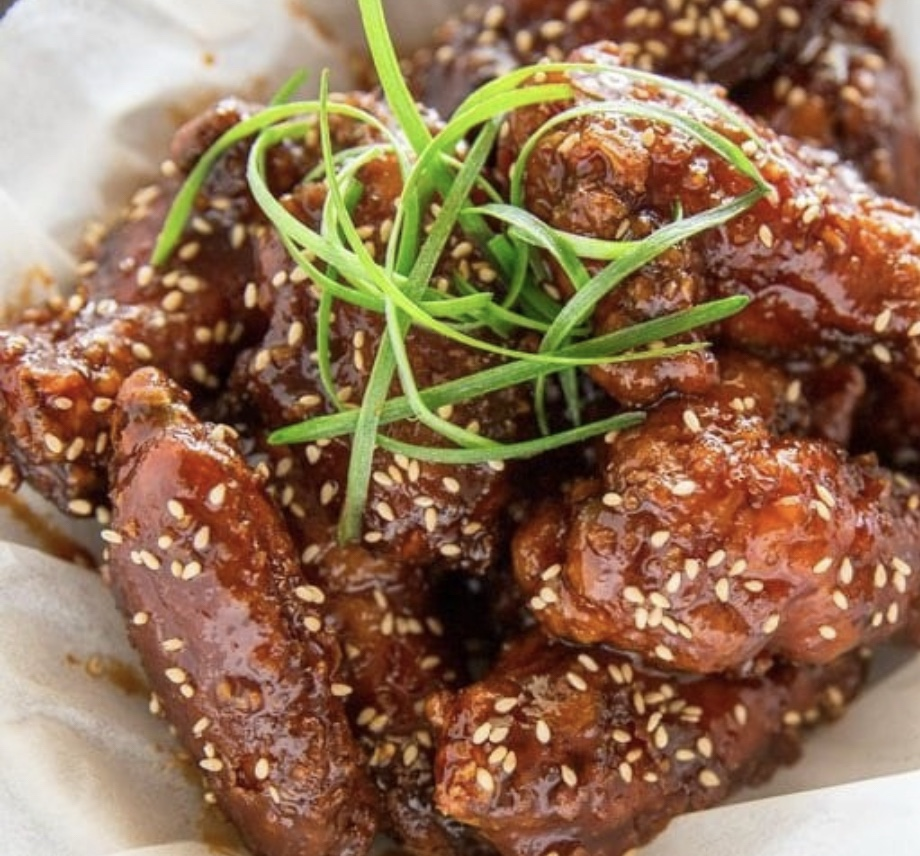remove from the heat and serve hot
KOREAN BULGOGI
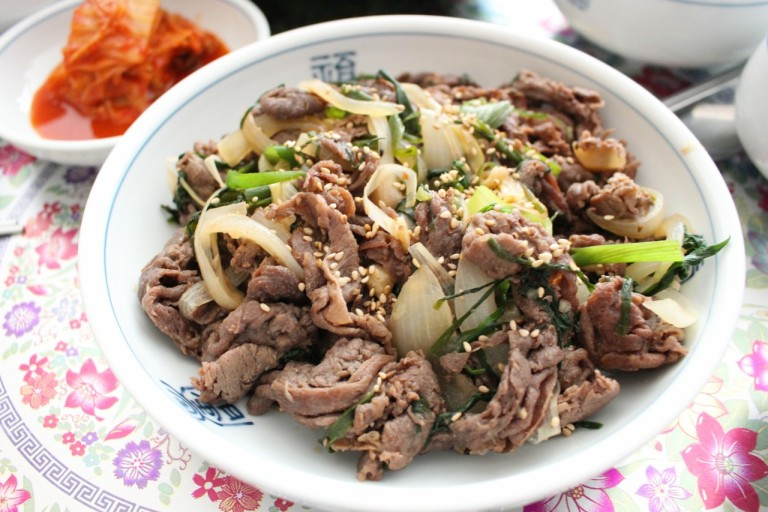Ingredients !
Marinade
To serve bulgogi Seoul-style

1. If using packaged pre-sliced meat, separate the slices. Remove any excess blood from the pre-sliced meat using paper towels.

2. Mix all the marinade ingredients in a bowl.

3. Place the meat and vegetables in a large bowl. Add the marinade and toss gently to combine everything well. Marinate the meat for 30 minutes to an hour, up to overnight.
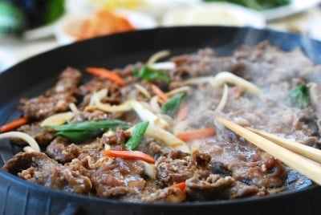4.Grilling: Grill the meat on a charcoal or gas grill or pan fry in a skillet over high heat until slightly caramelized. If pan searing, preheat the pan nice and hot and cook the meat until slightly caramelized. Do not crowd the skillet.
5. OR Stir-frying: Preheat the pan, and add the meat over high meat. You can crowd the pan to generate some liquid and let the meat cook in its own juice. Cook until the meat is no longer pink. Use all the marinade if you want some sauce at the end.
JAPCHAE
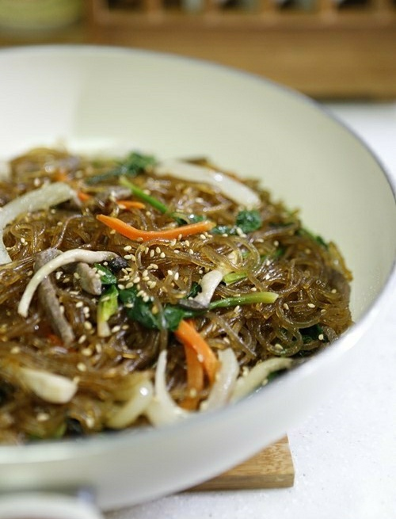Ingredients !
 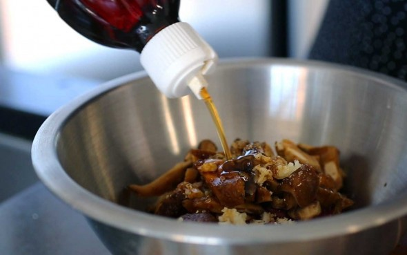
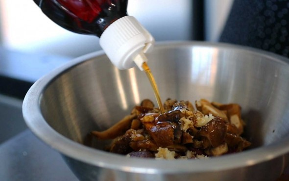
Marinate the beef and mushrooms
Put the beef and shiitake mushrooms into a bowl and mix with 1 clove of minced garlic, 1 teaspoon sugar, ¼ teaspoon ground black pepper, 2 teaspoons soy sauce, and 1 teaspoon of toasted sesame oil with a wooden spoon or by hand. Cover and keep it in the fridge.
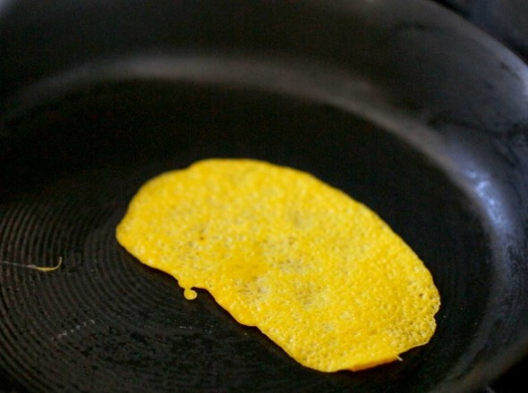Make the egg garnish (jidan)
1.Crack the egg and separate the egg yolk from the egg white. Remove the white stringy stuff (chalaza) from the yolk. Beat in a pinch of salt with a fork.
2.Add 1 teaspoon of vegetable oil to a heated nonstick pan. Swirl the oil around so it covers the pan, and then wipe off the excess heated oil with a kitchen towel so only a thin layer remains on the pan.
3.To keep the jidan as yellow as possible, turn off the heat and pour the egg yolk mixture into the pan. Tilt it around so the mixture spreads thinly. Let it cook using the remaining heat in the pan for about 1 minute. Flip it over and let it sit on the pan for 1 more minute.
4.Let it cool and slice it into thin strips.
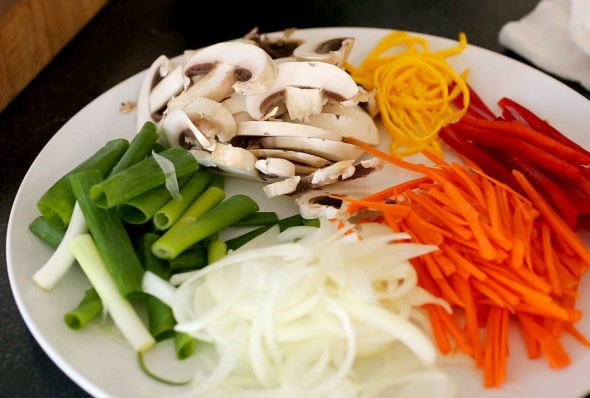Prepare the noodles and vegetables
• Bring a large pot of water to a boil. Add the spinach and blanch for 30 seconds to 1 minute, then take it out with a slotted spoon or strainer. Let the water keep boiling to cook the noodles.
• Rinse the spinach in cold water to stop it from cooking. Squeeze it with your hands to remove any excess water. Cut it a few times and put it into a bowl. Mix with 1 teaspoon soy sauce and 1 teaspoon toasted sesame oil. Put it into a large mixing bowl.
1. Put the noodles into the boiling water, cover and cook for 1 minute. Stir them with a wooden spoon so they don’t stick together. Cover and keep cooking for another 7 minutes until the noodles are soft and chewy.
2. Strain and cut them a few times with kitchen scissors. Put the noodles into the large bowl next to the spinach. Add 2 teaspoons toasted sesame oil, 1 teaspoon soy sauce, and 1 teaspoon sugar. Mix well by hand or a wooden spoon. This process will season the noodles and also keep the noodles from sticking to each other.

3. Heat up a skillet over medium high heat. Add 2 teaspoons vegetable oil with the onion, the green onion, and a pinch of salt. Stir-fry about 2 minutes until the onion looks a little translucent. Transfer to the noodle bowl.
4. Heat up the skillet again and add 2 teaspoons vegetable oil. Add the white mushrooms and a pinch of salt. Stir-fry for 2 minutes until softened and a little juicy. Transfer to the noodle bowl.
5. Heat up the skillet and add 1 teaspoon vegetable oil. Add the carrot and stir-fry for 20 seconds. Add the red bell pepper strips and stir-fry another 20 seconds. Transfer to the noodle bowl.
6. Heat up the skillet and add 2 teaspoons vegetable oil. Add the beef and mushroom mixture and stir fry for a few minutes until the beef is no longer pink and the mushrooms are softened and shiny. Transfer to the noodle bowl.

Mix and serve
7.Add 1 minced garlic clove, 1 tablespoon soy sauce, 1 tablespoon sugar, ½ teaspoon ground black pepper, and 2 teaspoons of toasted sesame oil to the mixing bowl full of ingredients. Mix all together by hand.

8. Add the egg garnish and 1 tablespoon sesame seeds. Mix it and transfer it to a large plate and serve.
KIMCHI STEW

Ingredients !
1 .Cut the kimchi into bite size pieces.

2 .Cut the meat into bite sizes. Slice the tofu (about 1/2-inch thick), and roughly chop the scallions.

3 .Heat a small to medium pot with 1 tablespoon of oil. Add the kimchi, pork, red pepper flakes and garlic and cook over medium high heat until the kimchi is softened and the pork cooks through, about 5 to 7 minutes.

4. Add the kimchi juice and about 2 to 2.5 cups of water (or broth). Bring it to a boil, and continue cooking for 5 minutes. Then, reduce the heat to medium, and boil, covered, for about 15 minutes. You can add more water if necessary.
5.Drop the tofu and scallions in. Salt (or soup or regular soy sauce) and pepper to taste. (Salt is usually not necessary, unless kimchi was lightly seasoned or kimchi juice is not available.) Boil until the tofu is cooked through, about 5 minutes. Serve while bubbling over from the heat.
KOREAN SOYBEAN PASTE STEW

Ingredients !

1. Cut the tofu and zucchini into about 1-inch cubes. Cut the radish into thin small squares. Thinly slice the onion and pepper. Roughly chop the scallion. Slice the meat into thin strips.

2. Preheat a small pot with a little bit of oil. Sauté the meat, soybean paste, and chili pepper flakes, over medium heat for 3 to 4 minutes.

3. Add the water (or anchovy broth) and stir well to dissolve the soy bean paste. Add the radish. Boil over medium high heat for 4 to 5 minutes.

4. Add the onion, garlic, tofu, zucchini, and chili pepper. Boil for an additional 5 to 6 minutes. Throw in the scallion and add the vinegar with a minute or two remaining.